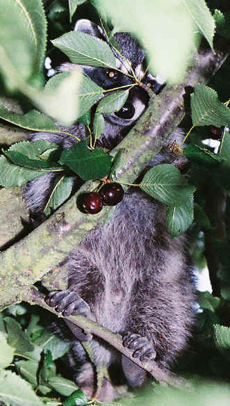
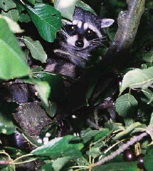

|
|
It is easy to think we are somehow removed from nature in our urban and semi-urban settings. Nature has a way of filling in around and among human habitations and every so often we are given a glimpse and a gift.
|
 Will work for cherries |
2004 July 3.
One July morning in 2003, I walked out onto our West
Seattle front porch to find out what all the rustling noises were.
Across the fence in the neighbor's yard, I could see the swaying
branches in their cherry tree. As I watched, I saw this
sumo-proportioned raccoon struggling out the branches in search of the
ripest cherries. I wasn't sure whether the raccoon would win or
the branch would give way and deposit her largeness on the neighbor's
lawn. This year, as our oldest son, Doug, was visiting, I was called to the back yard of our house to see who was visiting our cherry tree. This little fellow was learning how to work the cherry crop while keeping a wary eye on the curious human below. We left the timidly-determined character alone to feast in solitude. |
 |
|
|
|
|
|
|
|
|
You are navigating Orcmid's Lair |
created 2004-09-12-15:22 -0700 (pdt) by orcmid |